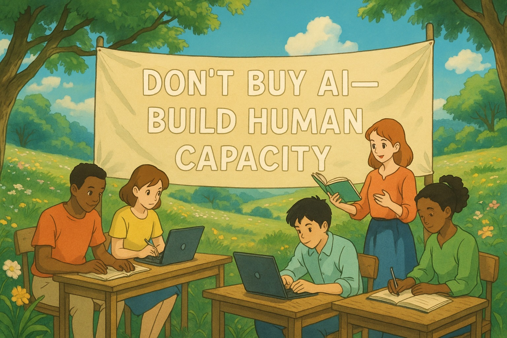

อย่าซื้อ Generative AI แจกถ้ายังไม่รู้ว่าจะสร้างคนแบบไหน เพราะการศึกษายุค AI ต้องเริ่มจาก mindset ไม่ใช่เริ่มจากซอฟต์แวร์
{kind=link}

โพสต์นี้ตั้งคำเตือนแบบตรงมากว่า อย่าหาเรื่องซื้อ Generative AI แจก ถ้ายังไม่รู้ด้วยซ้ำว่าจะเอามันไปใช้ทำอะไร เพราะสำหรับผู้เขียน ปัญหาหลักของการศึกษายุค AI ไม่ใช่การขาดเครื่องมือ แต่คือการขาดเป้าหมายที่ชัดว่าเรากำลังพยายามสร้างผู้เรียนแบบไหนขึ้นมา
สิ่งที่ทำให้บทความนี้มีน้ำหนักคือผู้เขียนไม่ได้วิจารณ์แบบลอย ๆ แต่ยกตัวอย่าง 3 โครงการที่กำลังทำอยู่จริงในมหาวิทยาลัยเกษตรศาสตร์ ได้แก่ AI for All, AI for Engineering และ AIEP เพื่อแสดงว่าการพัฒนา AI ในการศึกษาไม่จำเป็นต้องเริ่มจาก software แพง ๆ แต่เริ่มจาก philosophy ที่ชัดได้
แกนสำคัญของโพสต์นี้คือประโยค Mindset > Tools ผู้เขียนกำลังเสนอว่าถ้าองค์กรหรือมหาวิทยาลัยไม่มีคำตอบว่าอยากสร้างบัณฑิตแบบไหน การลงทุนกับเครื่องมือ AI จำนวนมากก็มีโอกาสสูงที่จะกลายเป็นเพียงของเล่นราคาแพง เพราะผู้ใช้ไม่มีทั้งกรอบคิดและทิศทางในการใช้มันให้เกิดคุณค่าจริง
AI for All คือเกราะพื้นฐาน ไม่ใช่คอร์สแฟชั่นสำหรับคนอยากใช้ prompt เก่งขึ้นเท่านั้น
ในตัวอย่างแรก ผู้เขียนอธิบายวิชา AI for All ว่าเป็น “เกราะป้องกัน” ให้นิสิตทุกคณะรู้เท่าทัน AI ไม่ถูกมันหลอกใช้ และสามารถตั้งคำถามกับสิ่งที่ AI สร้างขึ้นได้อย่างมีวิจารณญาณ มุมนี้สำคัญมากเพราะทำให้ AI literacy ถูกวางในฐานะ ความสามารถพลเมืองยุคใหม่ ไม่ใช่ทักษะเสริมของคนสายเทคนิคเท่านั้น
นั่นทำให้การสอน AI ในระดับมหาวิทยาลัยไม่ควรจบที่ prompt หรือการใช้เครื่องมือยอดนิยม แต่ต้องทำให้ผู้เรียนมีภูมิคุ้มกันทางความคิดต่อโลกที่ AI กำลังเปลี่ยนแปลง
AI for Engineering และ AIEP คือการย้ายจากการเป็นผู้ใช้ ไปสู่การเป็นคนที่เข้าใจและแก้ปัญหาจริง
ตัวอย่าง AI for Engineering และ AIEP ชี้ให้เห็นว่าผู้เขียนไม่ได้ปฏิเสธเครื่องมือ AI แต่ต้องการให้มันถูกวางอยู่ในโครงสร้างการเรียนรู้ที่ทำให้ผู้เรียนขยับจาก “วิศวกร” ไปเป็น “วิศวกรยุคข้อมูล” และในกรณีของ AIEP คือไปถึงระดับที่ไม่ใช่แค่ใช้ AI เป็น แต่เข้าใจมันถึงแก่นและสร้างระบบจริงได้
มุมนี้ต่างจากการซื้อซอฟต์แวร์มาแจกมาก เพราะสิ่งที่ถูกสร้างคือ ความสามารถเชิงลึก ไม่ใช่ความคุ้นมือกับผลิตภัณฑ์เฉพาะรายหนึ่ง
ปรัชญา “สร้างคน ไม่ใช่ซื้อของ” คือคำวิจารณ์เชิงระบบต่อวัฒนธรรมติ๊กถูกในองค์กรการศึกษา
ส่วนที่คมที่สุดของโพสต์อาจไม่ใช่การพูดเรื่อง AI โดยตรง แต่คือการวิจารณ์วัฒนธรรมการทำงานแบบติ๊กถูก ที่ทำให้องค์กรรู้สึกว่าขอเพียงซื้อเครื่องมือใหม่เข้ามา ก็เหมือนได้ “ทำเรื่อง AI แล้ว” ทั้งที่จริงยังไม่ได้แตะเรื่องการพัฒนาคนเลย
ผู้เขียนจึงย้ำว่าเขาแทบไม่ได้ลงทุนกับซอฟต์แวร์ราคาแพง แต่ใช้เครื่องมือ open source ให้นิสิตได้ลงมือทำจริง ล้มเหลวจริง และเรียนรู้จริง เพราะการเรียนรู้ที่ยั่งยืนไม่เกิดจากการเช่าเทคโนโลยีมาใช้ชั่วคราว แต่เกิดจากการสร้างศักยภาพภายในตัวผู้เรียน
คำถามสุดท้ายไม่ใช่ว่า AI ทำอะไรได้ แต่คือถ้าทุกคนถาม AI ได้เหมือนกัน แล้วเขาจะจ้างเรามาทำไม
ประโยคปิดของโพสต์นี้ทรงพลังมาก เพราะมันพลิกคำถามจาก “ควรซื้อ AI ไหม” ไปเป็น “เราจะสร้างคนที่ทำในสิ่งที่ AI ทำไม่ได้อย่างไร” นี่คือคำถามเชิงยุทธศาสตร์ที่ลึกกว่าการเลือกยี่ห้อหรือแพ็กเกจ และเป็นคำถามที่มหาวิทยาลัยควรตอบให้ได้ก่อนใช้เงินก้อนใหญ่กับเทคโนโลยีใด ๆ
ดังนั้น บทความนี้จึงเป็นทั้งคำเตือนเรื่องงบประมาณและข้อเสนอเชิงหลักการต่ออนาคตการศึกษา ว่าถ้ายังไม่รู้ว่าจะสร้างคนแบบไหน การซื้อ AI เพิ่มก็ไม่ได้ช่วยให้ระบบฉลาดขึ้นแต่อย่างใด